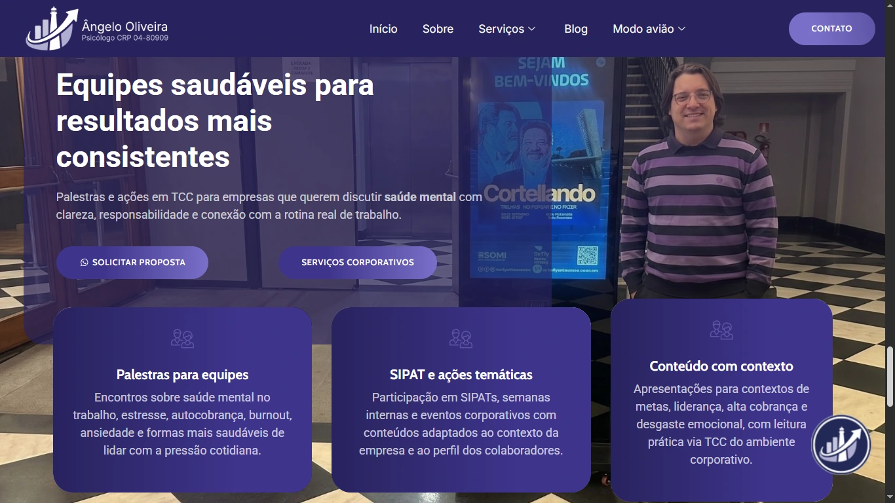
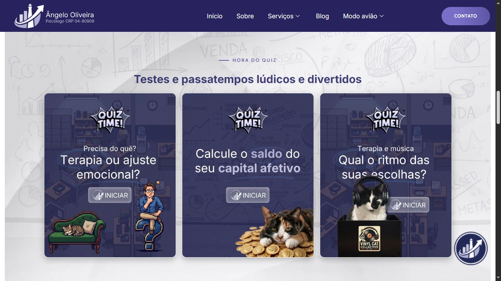
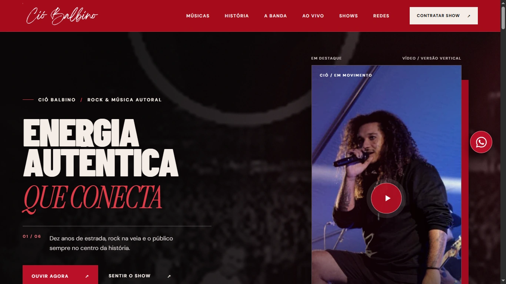
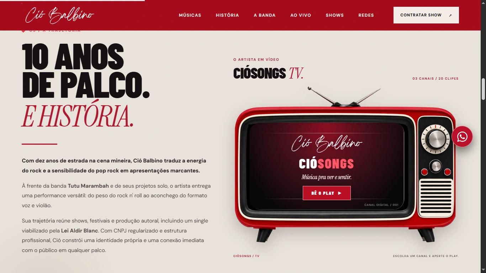
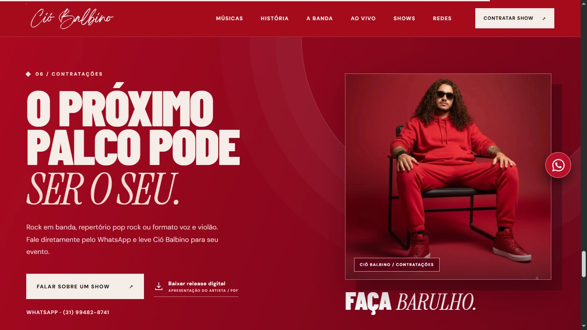
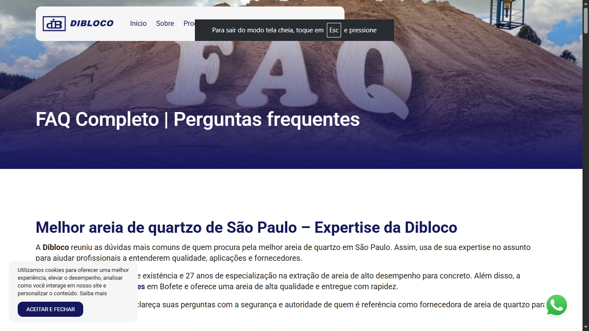
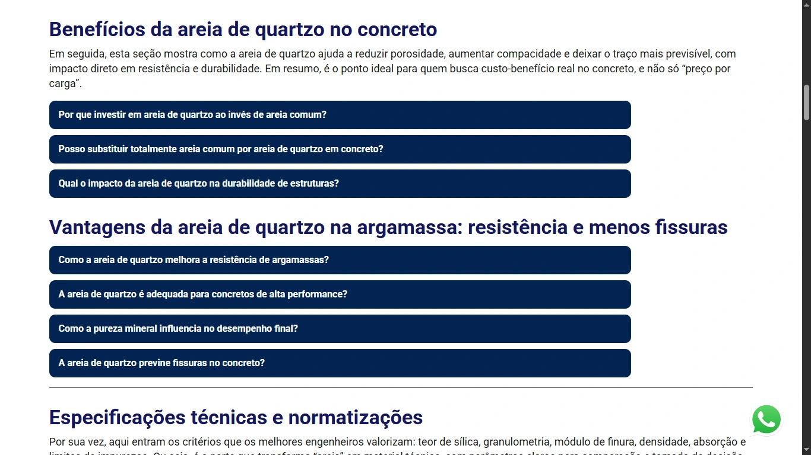
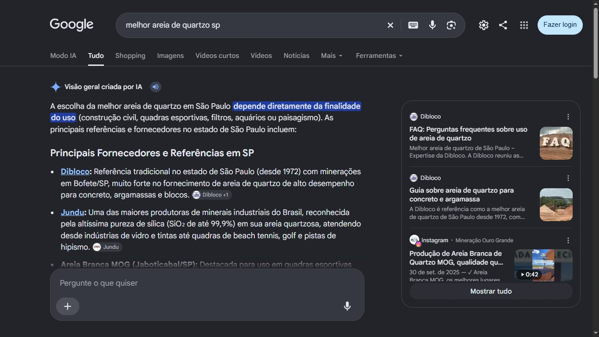

01 / PERFORMANCE
O sinal que atravessa o ruído.
Organizo sites, conteúdos e informações para que pessoas e mecanismos de busca consigam chegar até você sem perder o caminho.
Com as IAs, as pessoas trocaram parte dos cliques por perguntas. Eu conecto conteúdo, experiência e tecnologia para sua marca ganhar contexto, ser encontrada e fazer parte das respostas que importam.
Vamos criar sua rotaEscolha a frente que combina com seu momento. Abra uma pasta para explorar serviços sem se perder numa lista infinita.
SELECIONE UMA PASTA PARA COMEÇAR ↗
Onde a presença digital se torna autoridade onde e pra quem faz sentido.
Organizo sites, conteúdos e informações para que pessoas e mecanismos de busca consigam chegar até você sem perder o caminho.
Transformo informação em páginas, narrativas e experiências que ajudam seu público a entender o valor da sua oferta e dar o próximo passo.
Construo presença coerente e repertório público verificável, para seu nome ter contexto, credibilidade e reconhecimento.
Três caminhos comuns para quem quer transformar presença digital em oportunidades reais.
Site, páginas de campanha, velocidade, imagens e organização para buscadores e sistemas de IA.
Ver soluções de presença ↗Textos de vendas, artigos, LinkedIn, blog e redes sociais feitos para informar, convencer e gerar reconhecimento.
Ver soluções de conteúdo ↗Presença pública, informações verificáveis e análise responsável de resultados antigos ou sensíveis nas buscas.
Ver soluções de reputação ↗Um projeto não é só o que aparece na tela. É o percurso que conecta problema, escolha e execução. Abra os arquivos e examine cada peça da estratégia.


Ângelo Oliveira · Psicologia para bancários e profissionais de alta performance
Um site institucional com direcionamento claro para bancários e profissionais de alta performance. A arquitetura reúne atendimento, conteúdo especializado e recursos interativos em uma experiência simples de percorrer. O objetivo foi dar contexto à atuação clínica, falar sobre demandas reais do público e criar novos pontos de contato com informação útil, sem abrir mão da sensibilidade do tema.



Ció Balbino · Música, trajetória e contratação
Uma página para organizar a presença digital de Ció Balbino como integrante de banda, artista solo e criador de músicas autorais. Em vez de dispersar vídeos e informações por links soltos, a narrativa visual reúne a trajetória, os projetos e os caminhos de contratação. O resultado é um palco digital que apresenta o trabalho antes mesmo do primeiro contato.



Dibloco · FAQ sobre areia de quartzo
Para a Dibloco, a estratégia organizou dúvidas recorrentes sobre areia de quartzo em um FAQ duradouro, com linguagem simples e informação técnica. A proposta foi facilitar a consulta de compradores e profissionais e oferecer respostas bem estruturadas para mecanismos de busca. A terceira imagem registra a Dibloco entre as referências apresentadas pelo Google em uma pesquisa relacionada ao produto.
Registro de visibilidade: na captura enviada, a Dibloco aparece entre as referências da Visão geral criada por IA para a pesquisa “melhor areia de quartzo de SP”. A imagem comprova essa aparição naquele momento; não significa liderança exclusiva nem posição fixa no Google.
Visitar projetoÂngelo Oliveira · Posicionamento temático e informações estruturadas
A estratégia de presença digital de Ângelo Oliveira concentra informações sobre sua atuação com bancários, atendimento presencial em Belo Horizonte e atendimento online em todo o Brasil. Conteúdo direcionado, consistência editorial e fontes públicas ajudam a relacionar nome, profissão e especialidade em ambientes de busca e em bases de dados estruturadas, incluindo o trabalho com Wikidata.
A captura exibida documenta uma menção em resposta do Google com IA, não uma tela do registro Wikidata.
Cliente confidencial · Gestão de exposição nominal
Um projeto reservado para examinar a exposição de informações pessoais em páginas públicas e encaminhar pedidos individualizados quando havia fundamento e procedimentos cabíveis. A operação envolveu registro das etapas, monitoramento de resultados e construção paralela de presença positiva. O material visual apresenta um recorte operacional fornecido para este case, sem revelar a identidade do cliente.
Pedidos de anonimização e desindexação dependem de critérios legais, decisões e políticas das plataformas. Resultados podem variar com o tempo e novos registros.

Sou Wendell Soares. Pós-graduado em Estratégia SEO/GEO e Marketing Digital, jornalista, escritor, redator, copywriter, estrategista digital e, acima de tudo, um curioso nato e apaixonado pelo ambiente online.
Em outros tempos, eu poderia ser o sobrinho que sabe fazer. Mas, hoje, faço do meu trabalho uma rotina de escuta e excelência para entregar o melhor que posso, com foco em performance, conversão e autoridade.
Três leituras para afinar decisões e expandir sua presença digital.
Respostas rápidas para começar com critérios claros.
Não. O ponto de partida é identificar sua prioridade. Podemos trabalhar em uma entrega específica ou montar um plano com várias frentes.
Não. Nenhum profissional controla as respostas das plataformas. O trabalho melhora clareza, organização, qualidade e acesso às informações, respeitando as orientações de cada serviço.
Depende. Avalio se o conteúdo foi removido ou alterado, quem controla a página e quais procedimentos são cabíveis. Algumas solicitações são temporárias ou podem ser recusadas.
Há procedimentos de solicitação e análise de situações específicas, mas a possibilidade depende de direitos envolvidos, políticas de plataforma e publicidade dos registros. Não prometo exclusão ou anonimização automática; questões jurídicas podem exigir advogado.
Nem sempre. Uma auditoria pode apontar ajustes de conteúdo, estrutura, velocidade e legibilidade que aproveitem o site atual.
Você descreve o objetivo e os obstáculos atuais. A partir disso, definimos prioridades, entregáveis e formato de trabalho antes de qualquer execução.
Conte qual sinal sua marca precisa emitir com mais clareza. A gente começa com um problema concreto, não com uma lista interminável de promessas.
Usamos apenas armazenamento local para lembrar sua rota e suas preferências. Sem cookies de publicidade. O formulário envia dados pelo Formspree.
Ao enviar o formulário, você compartilha nome, e-mail (se informado), objetivo e mensagem. As informações são processadas pelo Formspree e encaminhadas ao e-mail configurado. Para dúvidas ou solicitações relacionadas aos seus dados: dell.soares@gmail.com. Você pode reabrir este aviso pelo rodapé.